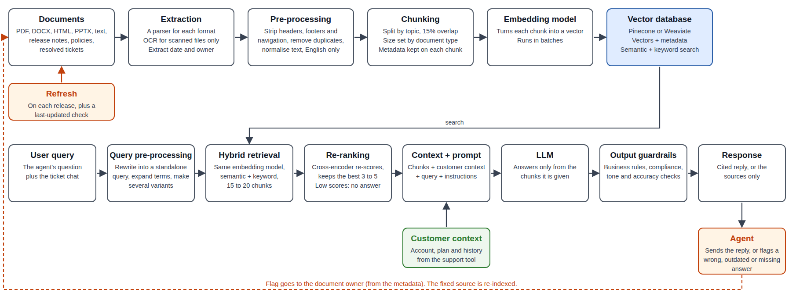
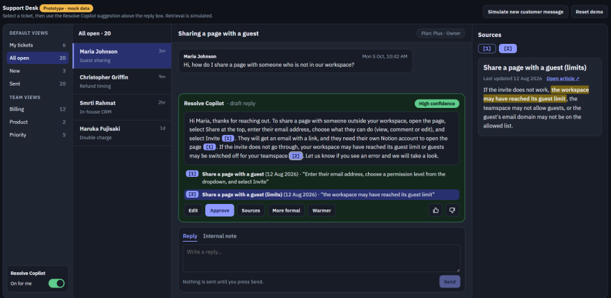
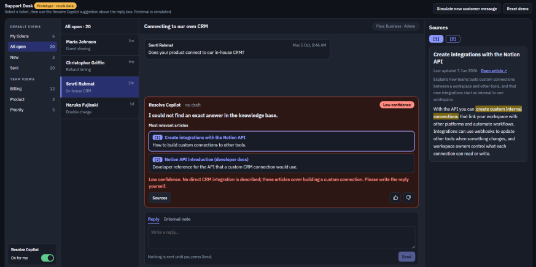
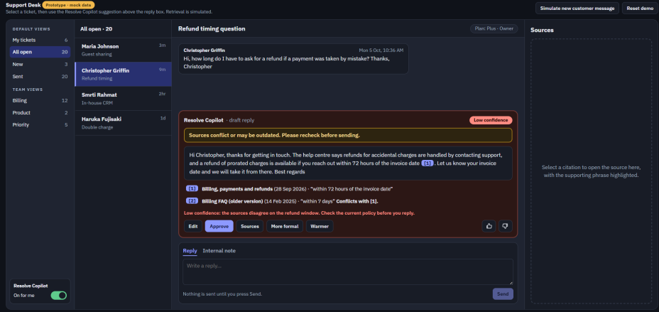
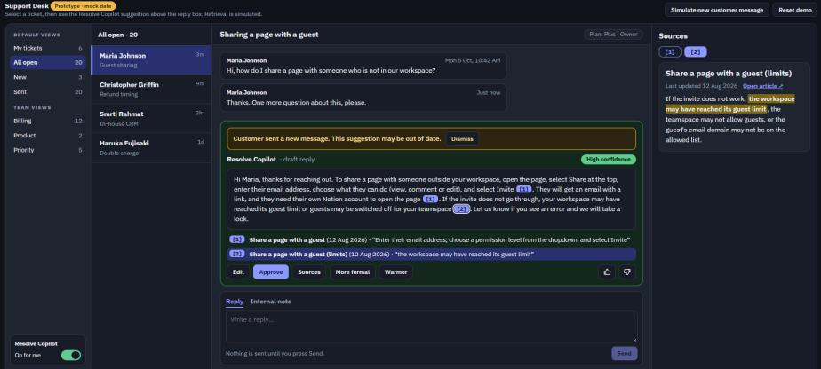

Course project · RAG · Customer support
Resolve Copilot
A RAG-powered copilot that drafts cited replies for support agents from a company's own docs, so answers are faster, consistent, and checkable before they go out.
8 min read
The problem
Support agents spend most of their time on questions the company has already answered somewhere, finding the right doc, checking it is current, and retyping the same reply.
The approach
Retrieval-augmented generation over the company's own docs, policies and past tickets, so every draft reply cites the exact passage it came from.
How I judged it
Given a real support ticket, does the draft actually match what the docs say, and does the tool say "I don't know" instead of guessing when they don't?
This is a PRD and prototype from an AI product management course, not something built or shipped at a company. The prototype is a generic mock support tool, not a real product's interface, built in Claude Design from the brief below.
Framing
Why RAG, and not a bigger prompt or a fine-tuned model
A general model has never seen a company's internal docs, so without help it would guess, and the full documentation is too large to paste into every prompt anyway. Fine-tuning solves the knowledge problem for a moment, but support docs change with every release, so the model would need retraining constantly, and a fine-tuned model still can't show where an answer came from.
RAG fits both gaps at once. It looks up the current docs when the ticket comes in, so answers stay current without retraining anything, and it returns the exact source alongside the answer. That source is what makes the whole product work: an agent is required to check a draft before sending it, and a citation is what makes checking fast instead of a second research task.
How it fits together
One pipeline, from documents to a cited reply
Documents are parsed, chunked by type (small for dense technical text, larger for narrative help articles) and embedded with a multimodal model, since support docs are full of screenshots and tables, not just text. A query gets rewritten into several variants, searched with both semantic and keyword matching, then re-ranked down to the best few chunks before the model ever sees them.

What happens when retrieval doesn't find a clean answer
If every retrieved chunk scores low, Resolve Copilot says so and shows what it did find instead of answering from the model's memory. If two kept chunks disagree, it shows both with a warning rather than quietly picking one. Neither threshold is a guess: both get tuned against a held-out set of questions during testing, not left to the model to decide case by case.
The decisions that mattered
Three calls I'd make again
1 · Citations are the whole point, not a nice-to-have
It would have been easy to treat citations as a UI detail: a small link under the draft. Instead they're the reason the product is usable at all. An agent is never allowed to send a reply unedited and unchecked, so the real design question was how to make checking take seconds instead of minutes: the supporting phrase is highlighted in the source, and the source opens in a side panel without leaving the ticket. Verification had to be as fast as the draft itself, or agents would stop trusting the drafts and stop using the tool.
2 · Saying "I don't know" is a feature, not a failure
The tempting version of this product always answers. The useful version knows when to stop. When no chunk scores well enough, Resolve Copilot writes no draft at all and shows the most relevant articles instead, so the agent writes the reply themselves with the right references in front of them. Refusing confidently is harder to design than answering confidently, and it matters more: a wrong answer with a citation attached is more dangerous than no answer, because the citation makes it look checked.
3 · The agent decides, every single time
Resolve Copilot never replies to a customer and never escalates a ticket on its own. It drafts, it flags when something needs a human decision like a refund, and it names the team to route to, but sending and deciding always stay with the agent. That boundary shaped the permission model too: the copilot only searches documents the agent is already allowed to see, checked before retrieval and checked again after, so two agents can get different results for the same question and that's correct, not a bug.
Clickable prototype
Four scenarios, run in Claude Design
I built the brief into a mock support tool (ticket list, conversation, reply box and the copilot's suggestion panel) and ran the four behaviours the PRD specifies: a confident cited draft, an honest "no exact answer," a sources-conflict warning, and a draft flagged out of date mid-review.




Retrieval is simulated in the prototype: it runs on a small set of mock Notion-style help articles, not a live search.
Spec vs. reality
What the build got right, and what I changed my mind on
The layout, the citations, the confidence tint and all three scenario behaviours matched the brief. Two things didn't, and both were worth noticing rather than forcing:
- The sources panel shows one source at a time, behind tabs. The brief asked for both sources in one scrollable list. Seeing the build made the tabbed version feel reasonable enough that I changed the spec to match it instead of fighting the build.
- The panel stays empty until a citation is clicked, even in the conflict case. That one I'd still fix: when two sources disagree, the agent should see both laid out immediately, not discover the second one by clicking.
Evaluation & cost
How I'd know if it actually works
Two metrics carry most of the weight: precision@K on retrieval (did it find the right chunks) and faithfulness on generation (is the answer actually supported by what it found). Business impact rides alongside them: acceptance rate, first response time, and resolution time, none of which mean anything if the first two are wrong.
On cost, a query averaging around 4,250 input tokens and 550 output tokens on Claude Sonnet 5.5 comes to about $0.014 per query, which works out to roughly $6 per agent per month at 440 tickets a month. Cheap enough that the real constraint on this product was never going to be cost, it was always going to be trust.
Takeaway
A RAG product is a trust product first
It's tempting to treat retrieval and generation as the hard parts of a RAG product, the parts worth the most design time. They're not, or at least they're not the only ones. The decisions that actually shaped Resolve Copilot were about confidence: when to answer, when to say nothing, when to show a warning instead of a clean draft, and when to hand the whole thing to a person. Get the retrieval right and the model will tell you the truth. Get the confidence decisions right and people will actually believe it.